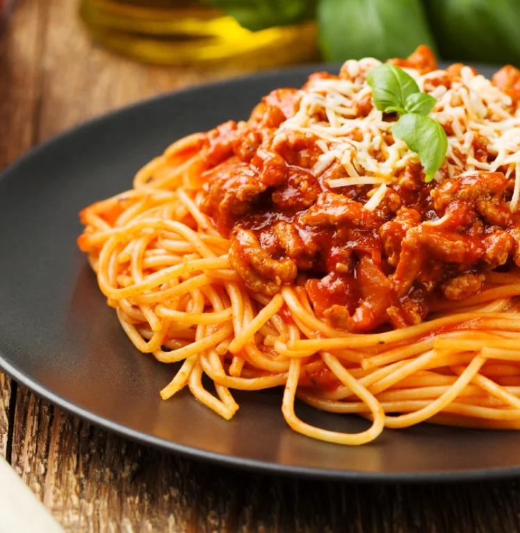

Home
Recipe's

How To Make Homemade Bolognese
Ingredients
Aubergine bolognese has everything you want in a tasty, hearty portion of
spaghetti as well as a little twist of aubergine and spices. Many people
across the globe love to enjoy a bowl of hearty spaghetti with meat sauce
and shredded cheese, and with the addition of aubergine and spices in our
tasty rendition, this traditional Italian pasta recipe gets a distinctly
Arabic twist. A fragrant, flavourful combination of chilli flakes, cumin,
and coriander serve as our chosen spices for bolognese with a Middle
Eastern twist. Try our easy Arabic spaghetti recipe this Ramadan when you
and yours are in the mood for a filling, spicy pasta dish.
- 1 tbsp olive oil
- 4 rashers smoked streaky bacon
- 2 medium onions
- 2 carrots
- 2 celery sticks
- 2 garlic cloves
- 2-3 sprigs rosemary
- 500g beef mince
- 2 x 400g tins plum tomatoes
- small pack basil
- 1 tsp dried oregano
- 2 fresh bay leaves
- 2 tbsp tomato purée
- 1 beef stock
- 1 red chilli
- 125ml red wine
- 6 cherry tomatoes
- 75g parmesan
- 400g spaghetti
Steps
- Put a large saucepan on a medium heat and add 1 tbsp olive oil.
-
Add 4 finely chopped bacon rashers and fry for 10 mins until golden and
crisp.
-
Reduce the heat and add the 2 onions, 2 carrots, 2 celery sticks, 2
garlic cloves and the leaves from 2-3 sprigs rosemary, all finely
chopped, then fry for 10 mins. Stir the veg often until it softens.
-
Increase the heat to medium-high, add 500g beef mince and cook stirring
for 3-4 mins until the meat is browned all over. brown.
-
Add 2 tins plum tomatoes, the finely chopped leaves from ¾ small pack
basil, 1 tsp dried oregano, 2 bay leaves, 2 tbsp tomato purée, 1 beef
stock, 1 deseeded and finely chopped red chilli (if using), 125ml red
wine and 6 halved cherry tomatoes. Stir with a wooden spoon, breaking up
the plum tomatoes.
-
Bring to the boil, reduce to a gentle simmer and cover with a lid. Cook
for 1 hr 15 mins stirring occasionally, until you have a rich, thick
sauce.
- Add the 75g grated parmesan, check the seasoning and stir.
-
When the bolognese is nearly finished, cook 400g spaghetti following the
pack instructions.
-
Drain the spaghetti and either stir into the bolognese sauce, or serve
the sauce on top. Serve with more grated parmesan, the remaining basil
leaves and crusty bread, if you like.